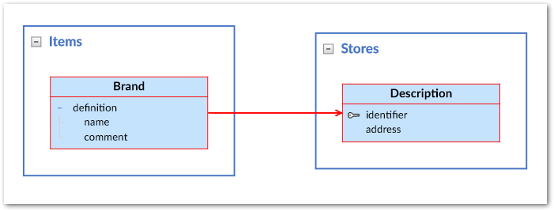
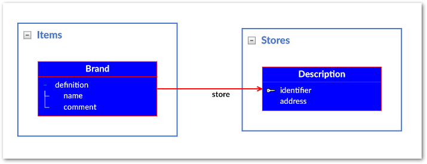
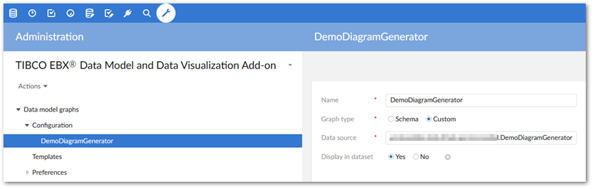
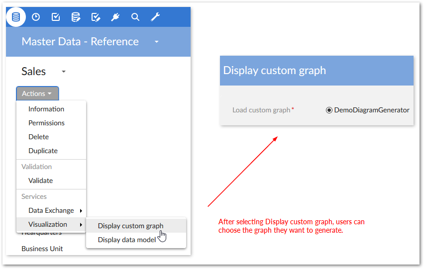

This section shows how to generate data model graphs from external sources and customize look and feel. You can define all data model graph components in a Java class. This is similar to using the DMA to build out a model, except model components are created using the API. You can allow users access to custom graphs in the following ways:
By creating a configuration in the add-on that points to the custom graph. This makes the graph selectable when users run the add-on's Generate custom graph service.
By making the graph available from a custom service you write using EBX®'s API.
You can use a Java class that implements the CustomGraphModelFactory interface to create a custom data model. The interface's build() returns a Diagram, which corresponds to a data model. The getGraphModelTemplate() returns the template to determine look and feel.
The DemoCustomGraphModelFactory class example below defines a model using some basic components. Please refer to the API reference to see how all objects translate to graph components.
Each constructed model must start with a root node. You then build-out the model by defining how components relate.
package com.orchestranetworks.addon.test.dmdv.service.model;
import com.onwbp.base.text.*;
import com.orchestranetworks.addon.dmdv.model.extension.*;
/**
*/
public final class DemoCustomGraphModelFactory implements CustomGraphModelFactory
{
public Diagram build()
{
Diagram diagram = new Diagram();
// The Diagram must start with a root node.
DatasetGroup rootNode = diagram.getRootNode();
// Add model components relative to the root node. The following adds a Stores group with one table and two fields.
DatasetGroup storeGroup = rootNode.addGroup("Stores");
Table storeDescription = storeGroup.addTable("Description");
storeDescription.addPrimaryKeyField("Identifier");
storeDescription.addField("Address");
// The following adds a Items group, a table, and updates the table label. Two of the fields are added to a table group. The final field is a FK to the Stores table.
DatasetGroup itemGroup = rootNode.addGroup("Items");
Table brandTable = itemGroup.addTable("brand");
brandTable.setLabel(UserMessage.createInfo("Brand"));
TableGroup brandTableGroup = brandTable.addGroup("Definition");
brandTableGroup.addField("Name");
brandTableGroup.addField("Comment");
TableField storeForeignKey = brandTableGroup.addField("Store");
storeForeignKey.setReferenceTable(storeDescription);
return diagram;
}
// To get the default graph template, return a new GraphModelTemplate().
public GraphModelTemplate getGraphModelTemplate()
{
return new GraphModelTemplate();
}
}
When users generate a graph based on the code in the sample, they will see the following:
To customize the look and feel of a data model graph, you can edit getGraphModelTemplate(). The following example shows a couple of basic changes to the DemoCustomGraphModelFactory class. Refer to the API documentation for a complete list of editable attributes.
package com.orchestranetworks.addon.test.dmdv.service.model;
import com.onwbp.base.text.*;
import com.orchestranetworks.addon.dmdv.model.extension.*;
/**
*/
public final class DemoCustomGraphModelFactory implements CustomGraphModelFactory
{
public Diagram build()
{
Diagram diagram = new Diagram();
// The Diagram must start with a root node.
DatasetGroup rootNode = diagram.getRootNode();
// Add model components relative to the root node. The following adds a Stores group with one table and two fields.
DatasetGroup storeGroup = rootNode.addGroup("Stores");
Table storeDescription = storeGroup.addTable("Description");
storeDescription.addPrimaryKeyField("Identifier");
storeDescription.addField("Address");
// The following adds a Items group, a table, and updates the table label. Two of the fields are added to a table group. The final field is a FK to the Stores table.
DatasetGroup itemGroup = rootNode.addGroup("Items");
Table brandTable = itemGroup.addTable("brand");
brandTable.setLabel(UserMessage.createInfo("Brand"));
TableGroup brandTableGroup = brandTable.addGroup("Definition");
brandTableGroup.addField("Name");
brandTableGroup.addField("Comment");
TableField storeForeignKey = brandTableGroup.addField("Store");
storeForeignKey.setReferenceTable(storeDescription);
return diagram;
}
// To get the default graph template, return a new GraphModelTemplate().
public GraphModelTemplate getGraphModelTemplate()
{
DisplayOptions displayOptions = new DisplayOptions();
displayOptions.setLabelOnLinksDisplayed(true);
TableStyle tableTemplate = new TableStyle();
tableTemplate.setBackground("#0706F9");
tableTemplate.setTextColor("#FFFFFF");
GraphModelTemplate template = new GraphModelTemplate();
template.setDisplayOptions(displayOptions);
template.setTableStyle(tableTemplate);
return template;
}
}
The following image shows the changes to the graph appearance by editing the template:
Once you have defined a model as described in the previous section, you can include it in a configuration in the add-on. After this users can access it via the Generate custom graph option in the UI.
The following steps must be performed by a user with administrative access.
To add the graph to a configuration:
Navigate to Administration > User interface > TIBCO EBX® Data Model and Data Visualization Add-on > Data model graphs > Configuration and create a new record.
Supply a name to identify this graph configuration. The add-on displays this name when users run the service.
For the Graph type option, select Custom.
In the Data source field, enter the fully qualified path to the class that defines the custom model.
Set the Display in dataset option as desired. This property determines whether users can access this graph from a dataset's Actions menu. If you only want this data model graph to be available from a custom service, set to No

The following image shows availability of the graph from a dataset's Actions menu:

You can make a custom graph available from all locations where users can run a service. Once you have defined an external model, use GraphModelHttpManagerComponentUtils.getComponentForGraphModelService to get the UIHttpManagerComponent that holds the custom graph. For more information on creating user services, refer to the EBX® product documentation.
As shown in the following example, a customGraphModelFactory is created based on the model previously defined in DemoCustomGraphModelFactory:
package com.orchestranetworks.addon.test.dmdv.service.model;
import javax.servlet.http.*;
import com.orchestranetworks.addon.dmdv.model.extension.*;
import com.orchestranetworks.service.*;
import com.orchestranetworks.ui.*;
/**
*/
public final class GraphModelAPI
{
private final ServiceContext sContext;
public GraphModelAPI(HttpServletRequest req)
{
this.sContext = ServiceContext.getServiceContext(req);
}
public void callPage()
{
UIServiceComponentWriter writer = this.sContext.getUIComponentWriter();
writer.add("<div id='GRAPH_MODEL_CONTAINER_TAB_DIV' style='height: 100%;'>");
writer.add("<iframe id='GRAPH_MODEL_IFRAME' width='100%' height='100%'");
CustomGraphModelFactory customGraphModelFactory = new DemoCustomGraphModelFactory();
GraphModelSpec graphModelSpec = new GraphModelSpec(
customGraphModelFactory,
this.sContext.getSession());
graphModelSpec.setDisplayGraphTitle(true);
UIHttpManagerComponent comp = GraphModelHttpManagerComponentUtils.getComponentForGraphModelService(
writer,
this.sContext.getCurrentAdaptation(),
graphModelSpec);
String url = comp.getURIWithParameters();
writer.add(" frameBorder='0' style='border-width: 0px; ' src='" + url + "'></iframe>");
writer.add("</div>");
writer.addJS_cr(
"var GRAPH_MODEL_CONTAINER_TAB_DIV = document.getElementById('GRAPH_MODEL_CONTAINER_TAB_DIV');");
writer.addJS_cr("function resizeGraphTabModel(size){");
{
writer.addJS_cr("GRAPH_MODEL_CONTAINER_TAB_DIV.style.width = size.w + 'px';");
writer.addJS_cr("GRAPH_MODEL_CONTAINER_TAB_DIV.style.height = size.h + 'px';");
}
writer.addJS_cr("}");
writer.addJS_addResizeWorkspaceListener("resizeGraphTabModel");
}
}